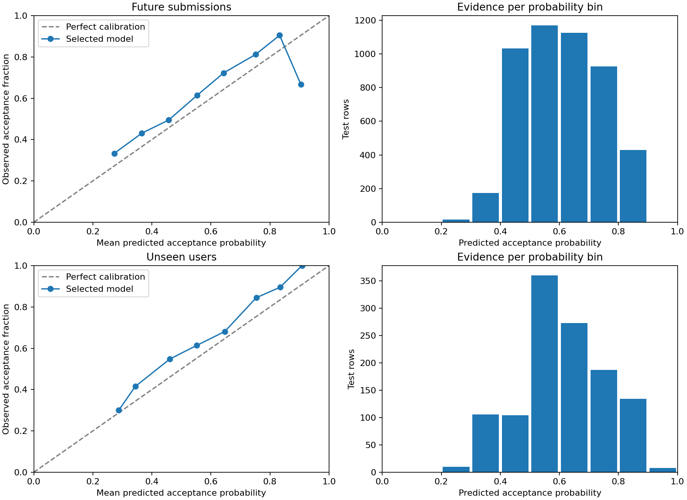
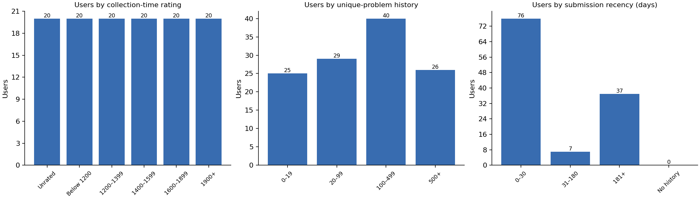

These are real, precomputed examples from our dataset. Live lookup for arbitrary handles
is not available. Suggestions reflect the saved history, so a problem may have been
attempted since capture.
Loading saved examples…
Topic evidence
Latest 200 eligible, mature attempts after training
A practice candidate has a negative model-adjusted contrast against this user's other
problems in the same 400-rating bands. It is a descriptive signal, not a proven
weakness. Select a topic to filter the problems below.
How much evidence is enough?
The display requires 30 recent eligible attempts overall, 10 matched topic attempts,
10 distinct comparison problems, and a historical user rating. These are conservative
product rules, not validated reliability thresholds. Unseen topics mean insufficient
evidence. Rate intervals are descriptive; attempts are correlated and tags overlap.
Topic comparisons use the actual outcome minus the model's historical prediction,
relative to other problems at similar difficulty. Missing-difficulty rows do not enter
matched comparisons.
New problems to try
All previously attempted problems are excluded from the saved history. Supported topic
matches come first, followed by estimated acceptance. This can favor easier practice;
learning benefits have not been measured. No probability is a guarantee.
02 / THE EVIDENCE
Better than guessing? Test it.
FINAL TESTS · SETTINGS FROZEN
Random Forest was selected using validation user-averaged log loss. Gradient Boosting
scored slightly better on the final tests; we retained the model selected before testing.
Final results were not used to change parameters.
Frozen model comparison · lower log loss and Brier are better
Model
Log loss
Brier
ROC-AUC
Precision
Recall
F1
Log loss penalizes confident wrong predictions. Brier measures squared probability error.
ROC-AUC measures ranking, not calibration. Precision, recall and F1 use acceptance as the
positive class and threshold 0.5. User ROC-AUC omits users with only one outcome;
undefined precision/recall/F1 are zero.
Calibration: do predicted probabilities match observed outcomes?

Fixed bins of width 0.1. Some extreme bins contain very few observations. No calibration
mapping was fitted on test labels.
Where the model struggles
The unseen-user test has only 17 users; the paired uncertainty interval includes no
improvement over baseline. Unseen users without a prior rating perform worse than baseline
(82 rows from 3 users). Only 3 unseen-user rows have no judged history. Sparse evidence
cannot support reliable weakness rankings.
Inspect actual validation errors
These are the three most confident false positives and false negatives at threshold
0.5—not typical error frequencies. Code quality and preparation are unobserved.
A row is a user's first recorded submission to a contest/index problem. Target 1 is
accepted; 0 is a finalized judged rejection. Team submissions, special problems,
compilation errors and other excluded verdicts do not become modeling rows. A later
retry never replaces an excluded first attempt.
02
A varied, imperfect sample
The public Codeforces API supplies profiles, rating histories, submissions and the
problem catalog. We collected 20 users in each of six current-rating groups, mixing
active and broad rated directories. Unrated users come from a recent-submission
sample. This is not a representative sample of all users.
03
Only earlier information
17 numeric inputs plus topic tags describe past attempts, acceptance, activity,
historical user rating and problem difficulty. Outcomes enter history after a one-day
delay. Equal-second events cannot inform each other. Medians, missing flags, scaling
and tag vocabulary are fitted only on training data.
04
Split before selecting
Training: 22,752 rows. Validation: 4,875. Future test: 4,876. Unseen-user test: 1,182.
We hold out users within rating groups, then split development users chronologically.
Earlier unseen-user history supplies context, never training rows. Training weights
give each user equal total influence.
Inspect cohort coverage and data quality

11,820 submissions lack problem difficulty, 11,265 lack tags, and 6,598 involve teams.
These are raw submission counts, not model-row counts. The largest user supplies 7.6% of
eligible rows; the top 10% supply 48.9%. Learned missing-value handling and equal-user
training weights address part of this imbalance. Collection requests are paced and
cached; historical metadata corrections remain possible.
Why these methods?
Acceptance-rate baseline
A constant equal-user-weighted training acceptance probability. A meaningful reference
for judging added complexity.
Logistic Regression
Regularized linear log odds. Simple and useful, but nonlinear interactions may be
missed.
Random Forest Selected
Averages nonlinear trees. Depth and minimum leaf size constrain overfitting; selected
on validation log loss.
Gradient Boosting
Adds shallow trees sequentially to optimize log loss. A second nonlinear method for
structured features.
What we can conclude
History offers predictive signal for first-attempt acceptance in this cohort. Random
Forest improves average log loss over the baseline on both final tests, but evidence for
reliable unseen-user improvement is limited. Prediction is not a diagnosis of intelligence
or DSA mastery, and recommendation effectiveness requires a prospective study.
Problem ratings and tags are collection-time snapshots. Historical verdict availability is
unknown. A seven-day lag check yields validation log loss 0.6107, versus 0.6074
originally; removing difficulty yields 0.6316. These checks reduce confidence in
simplistic claims, not the need to state remaining bias. Self-selected attempted problems
differ from arbitrary new recommendations.
04 / OPEN & REPRODUCIBLE
Follow the work.
Data, code, and reports
The repository contains the reviewed raw-data archive and checksum, frozen split
metadata, scripts, tests, model settings and results. Public handles are shown only
for the saved examples.
OpenAI Codex assisted with planning, code, tests and writing. Students must
independently review the work.
Full AI disclosure.
Student names, roll numbers, individual contribution statements and defense notes
remain to be supplied by the team. We do not claim these are complete.